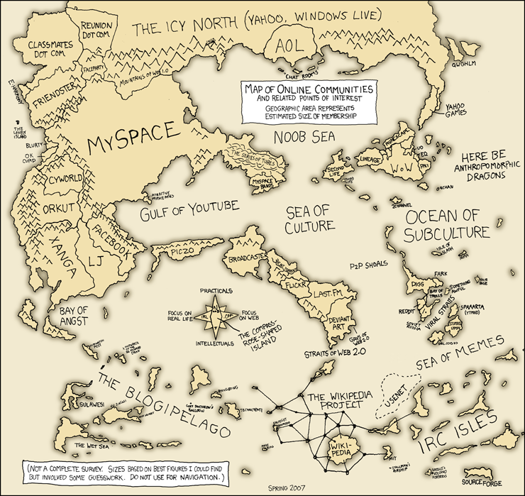

Personally, I imagine the internet as the world. the different URL suffixs are the different countries, the different websites are houses or buildings. index.php is the door, and the sub pages or threads are the rooms in the building or houses. I think of metanet as a always-under-construction building, with new rooms to explore and talk to people in. Your ideas?
Humorous Answer A: Through my monitor....
Humorous Answer B: (xkcd reference)
Actual Answer: Just as a place to cure boredom, solve problems, or serve daily needs. One word to sum up the previous sentence? Wikipedia (also Humorous Answer C).
Humorous Answer B: (xkcd reference)
Actual Answer: Just as a place to cure boredom, solve problems, or serve daily needs. One word to sum up the previous sentence? Wikipedia (also Humorous Answer C).
I separate the Internet into two distinct entities - The near Internet and the deep Internet - The near Internet are the places that normal folk use - Myspace, Yahoo, Wikipedia, Google, Sports Sites, Stock Trading Sites, Youtube, to an extent. The deep Internet is the place where we dwell - Forums, Messageboards, and other sites that require a larger input - Communities, and such.
The near Internet is a good resource - It's a highly-regulated, corporate place. It's a very unobtrusive place. I see it as the Downtown of the Internet - Where most of the people are very bland and 'normal.'
The deep Internet is a horrendous place - It's the anarchy-in-action rural principality of the Internet. It's the part of the Internet where the insane Klansmen and the crazy sexual deviants lie - It's the shack in Minnesota, it's where the freakish killers and terrorists and furries and pedophiles roam. And I hate it. I want it to be destroyed. I want it destroyed in the worst way. It's unlimited connectivity for the worst of the worst.
I love the near Internet (Of which I consider this a place), but the deep Internet needs some regulation.
The near Internet is a good resource - It's a highly-regulated, corporate place. It's a very unobtrusive place. I see it as the Downtown of the Internet - Where most of the people are very bland and 'normal.'
The deep Internet is a horrendous place - It's the anarchy-in-action rural principality of the Internet. It's the part of the Internet where the insane Klansmen and the crazy sexual deviants lie - It's the shack in Minnesota, it's where the freakish killers and terrorists and furries and pedophiles roam. And I hate it. I want it to be destroyed. I want it destroyed in the worst way. It's unlimited connectivity for the worst of the worst.
I love the near Internet (Of which I consider this a place), but the deep Internet needs some regulation.
I separate the Internet into two distinct entities - The near Internet and the deep Internet - The near Internet are the places that normal folk use - Myspace, Yahoo, Wikipedia, Google, Sports Sites, Stock Trading Sites, Youtube, to an extent. The deep Internet is the place where we dwell - Forums, Messageboards, and other sites that require a larger input - Communities, and such.
The near Internet is a good resource - It's a highly-regulated, corporate place. It's a very unobtrusive place. I see it as the Downtown of the Internet - Where most of the people are very bland and 'normal.'
The deep Internet is a horrendous place - It's the anarchy-in-action rural principality of the Internet. It's the part of the Internet where the insane Klansmen and the crazy sexual deviants lie - It's the shack in Minnesota, it's where the freakish killers and terrorists and furries and pedophiles roam. And I hate it. I want it to be destroyed. I want it destroyed in the worst way. It's unlimited connectivity for the worst of the worst.
I love the near Internet (Of which I consider this a place), but the deep Internet needs some regulation.
if you love the near internet, and this place is deep internet *deep space*
do you love this place?
i mean i dont consider this *deep space*
to me i see it as a beast of an encyclopedia combined with an awsome way to keep in contact with lots and lots of people. (and also to shoot them in the head once in a while)
The internet seems to be alive in its own way.
The internet seems to be alive in its own way.
"I love the near Internet (Of which I consider this a place)" Means that I consider Metanet to be Near Internet, mostly due to our strong userbase. We're a really amazing place, easily one of the best places Internet-side. Those of us who have been here for a long time set a good example for the newer folk, and in time, the newer members amalgamate their behavior to what's acceptable.
@Kablizzy; i think (s)he was referring to the fact that you said "The deep Internet is the place where we dwell".
I am rather unsure about what Kablizzy calls the 'deep' internet - the place were bad people can do their thang with relative impunity - because i believe in freedom of speech to a sometimes foolish degree - i believe that if people want to plan to undermine the west, to kill people, to rape people, whatever, that should be okay. Its when they actually start doing them that someone should step in.
However, there is an unfortunatly strong correlation with a bunch of pedophiles getting together for a chat about rape and a bunch of pedophiles then raping someone, so i do see where he is comming from.
But if i could kill the deep internet right now, i wouldnt.
Answer to original question;
I see the internet as somewhere to go when i have a couple of hours to kill.
I am rather unsure about what Kablizzy calls the 'deep' internet - the place were bad people can do their thang with relative impunity - because i believe in freedom of speech to a sometimes foolish degree - i believe that if people want to plan to undermine the west, to kill people, to rape people, whatever, that should be okay. Its when they actually start doing them that someone should step in.
However, there is an unfortunatly strong correlation with a bunch of pedophiles getting together for a chat about rape and a bunch of pedophiles then raping someone, so i do see where he is comming from.
But if i could kill the deep internet right now, i wouldnt.
Answer to original question;
I see the internet as somewhere to go when i have a couple of hours to kill.
I see the internet as a place to go if I have nothing else to do. Anything of importance comes before the internet, in my world. The internet is a place to talk to some friends at night. Though I do use the internet during the day, but it's not for entertainment purposes. It's mostly for email, and schoolwork.
'tis my connection to the world.
if you love the near internet, and this place is deep internet *deep space*
do you love this place?
i mean i dont consider this *deep space*
I believe he wants the 'bad' deep space out. I believe he also said that the 'deep' internet is where you contribute more. In response to this, there must be a good deep internet and the bad deep internet. The good deep internet (like this forum) is where people get too deep into each other; knit-tight communities, to be precise. The 'bad deep' internet is what Kablizzy referred to, pedophiles, furries, and all that like.
Basically, if the near internet is like the downtown, the deep internet is the regular neighborhood, so to speak. Sadly, there are good neighborhoods, and there are very bad ones. This forum is a good neighborhood. The ones down at Hialeah are not.
"I love the near Internet (Of which I consider this a place)" Means that I consider Metanet to be Near Internet, mostly due to our strong userbase. We're a really amazing place, easily one of the best places Internet-side. Those of us who have been here for a long time set a good example for the newer folk, and in time, the newer members amalgamate their behavior to what's acceptable.
I agree, but I disagree with Kablizzy about us being near internet, though. In fact, I don't think we're either near nor deep. Really, we are a forum, and that takes dedication, as Kablizzy said earlier, and most deep internet's are on the basis of dedication (either good or bad, in this case, good.) But... in here, we are like normal civilians, and we are tight-nit. There must be some middle ground between this place, a place between near and deep, where these characteristics combine. We are, ladies and gentlemen, the shallow internet. Yes. Think of it this way, If downtown were to be near internet, and deep internet would be the neighborhoods (or projects, depending how well it is.), we would have to be an upper-middle-class neighborhood. In this neighborhood, normality runs free, but we are also tight-knit, like the tigers and baby cubs in winter.
Let me finish this with a lame joke.
I view the internet through my computer, pretty much.
@Kablizzy; i think (s)he was referring to the fact that you said "The deep Internet is the place where we dwell".
I am rather unsure about what Kablizzy calls the 'deep' internet - the place were bad people can do their thang with relative impunity - because i believe in freedom of speech to a sometimes foolish degree - i believe that if people want to plan to undermine the west, to kill people, to rape people, whatever, that should be okay. Its when they actually start doing them that someone should step in.
However, there is an unfortunatly strong correlation with a bunch of pedophiles getting together for a chat about rape and a bunch of pedophiles then raping someone, so i do see where he is comming from.
But if i could kill the deep internet right now, i wouldnt.
Answer to original question;
I see the internet as somewhere to go when i have a couple of hours to kill.
Wait. I didn't say that. In fact, I said the exact opposite of that. But in either case, I revoke that statement that I totally made three days ago, we're now Deep Internet anyway.
Animator's right, we're Deep Internet now.
All this philosophy. I just categorize it, so things such as Jeeves, Wikipedia (that's right), Google, and Yahoo go in one category, Youtube gets its own category. Facebook and Myspace get their own categories (look, I moved, so I need to connect with my old friends in a free and easy way), and everything else is just junk, basically.
I've been known to come deep inside the internet. It's far too loose to receive any kind of pleasure, though.

For full image, go here:
http://imgs.xkcd.com/comics/online_communities.png

Source: XKCD
I've been known to come deep inside the internet. It's far too loose to receive any kind of pleasure, though.
That comment reminds me of Amsterdam, for some strange reason.

I like that xkcd map, but I'd like to draw a parallel to Frank Herbert's Dune. Obviouly this only makes sense if you've read the book(s). Arrakis is the internet, the Fremen are the internet "natives," or inhabitants of the deep internet. Many regular internet users, inhabitants of the polar ice-cap cities of dune, are un-aware of the number of inhabitants living in the deep desert, or internet. 
that was a wierd comparison. I must be taking too much spice. lul.
that was a wierd comparison. I must be taking too much spice. lul.
Yeah, yeah. That map works well. The upper-left is the near internet, and the lower-right is the deep internet, ostensibly.
I view the internet as a powerful force that has layed a curse on me to keep using it and abandon the real life 
An easy target.
Errr...

It's the closest thing to true privacy I've come in a long while. The well-known parts of the internet are a wonderful information source, a wonderful entertainment source. The lesser known parts of the internet are a haven-I rarely worry about saying whatever I damned well want to say. Certainly, the FBI could look at what I'm doing whenever they damned well please, but why me? They've got hundreds of millions of others to stalk for no real reason. I can be for realz because there's so many of me.
And because of that, it's a joyride. It can be absolutely hilarious. I can say things that I don't want certain people to hear to a large audience without the slightest chance of it coming back. It can really be anything I so desire. The back alley of the Internet is the big empty billboard on the highway that anyone can put a message on.
Yet, despite the fact that nobody knows who put the message there, if it's accepted, it can change everything (ref: 09 F9 11 02 9D 74 E3 5B D8 41 56 C5 63 56 88 C0). The Internet is not reality; it's power.
It's the Mafia, really. But it's a Mafia where nobody dies, and nobody loses their belongings. It's...interesting, really. I don't really know what I'd want to change about it.
Errr...
It's the closest thing to true privacy I've come in a long while. The well-known parts of the internet are a wonderful information source, a wonderful entertainment source. The lesser known parts of the internet are a haven-I rarely worry about saying whatever I damned well want to say. Certainly, the FBI could look at what I'm doing whenever they damned well please, but why me? They've got hundreds of millions of others to stalk for no real reason. I can be for realz because there's so many of me.
And because of that, it's a joyride. It can be absolutely hilarious. I can say things that I don't want certain people to hear to a large audience without the slightest chance of it coming back. It can really be anything I so desire. The back alley of the Internet is the big empty billboard on the highway that anyone can put a message on.
Yet, despite the fact that nobody knows who put the message there, if it's accepted, it can change everything (ref: 09 F9 11 02 9D 74 E3 5B D8 41 56 C5 63 56 88 C0). The Internet is not reality; it's power.
It's the Mafia, really. But it's a Mafia where nobody dies, and nobody loses their belongings. It's...interesting, really. I don't really know what I'd want to change about it.
It's the Mafia, really. But it's a Mafia where nobody dies, and nobody loses their belongings. It's...interesting, really. I don't really know what I'd want to change about it.
But that's the thing. People do die. People get hurt. And I'm not just talking about the physical things like rape and the like. I'm talking about people's money gets stolen. Their identity gets stolen. Their feelings are hurt. People are bullied. And it all happens on the internet.
People don't die or get raped on the internet. People die or get raped because they do something stupid with the internet.
The other stuff's true, though.
The other stuff's true, though.
People don't die or get raped on the internet. People die or get raped because they do something stupid with the internet.
The other stuff's true, though.
They can get virtually killed or virtually raped in virtual space though.
People don't die or get raped on the internet. People die or get raped because they do something stupid with the internet.They can get virtually killed or virtually raped in virtual space though.
The other stuff's true, though.
That may be the truest thing I've heard all day.
People don't die or get raped on the internet. People die or get raped because they do something stupid with the internet.They can get virtually killed or virtually raped in virtual space though.
The other stuff's true, though.
Huh? Do you mean like /me rapes j00 or something a little more serious?
In response to Demonz and Obby's points, I'd say the Internet is somewhat like driving a car, you think?
But unlike dying in a car crash, identity theft, though it can affect you for years, isn't permanent. I think I'd know because we've been through it.
Well, yeah. I wouldn't say that the harmful products of the internet outweigh its benefits.
I'm with Blizz. The Internet is an ether with variable depth. I'll extend the metaphor.
It's a vast oceanic sphere.
The very surface of the Internet is e-mail, faxes, and other necessities of business and communications. They are the touches of reality upon another medium. In this way, the Internet is just a telephone with text and colors. These portions of the Internet belie the depths below, making them seem as though they are about connectivity usable for the world at large. On the surface of the Internet, you can still see the sky above you, you can keep your boat above the waves, you are safe.
"Shallow areas", just a shade below the surface, include Facebooks and MySpaces and messengers. Tools people use to interact, send pictures, and the like. The shallowest regions of the Internet are not places, per se, nor are they communities. They are more immersive tools which people use to contact one another. One can still see the light of the sky through the waves above, if they care to look up. Unfortunately, many people believe their heads are above water when they sink just inches below the surface of the Internet. These people will never look up and will drown unceremoniously as they float near the surface. They will focus their lives on checking new Facebook photos, chatting on MySpace, and learning AIM-speak.
"Dive zones" make up the vast majority of actual space on the Internet, though most people who use the Internet are wading at the surface. This depth includes Youtube, Wikipedia, Google, and other pop-culture diversions. Anyone who isn't living under a rock knows about these place and, from time to time, will dive to these depths for entertainment. Going down to this level, of course, requires the use of proper protections (like a scuba suit) and perhaps a draw line so you can pull yourself away if things get too risky. You'd be hard-pressed to find a person who hasn't dove into these areas to see what they have to offer. Likewise, people can be caught here and--because of the faint light cutting through the waves above--they can believe they are above water. Those people will become lost souls who take their Youtube comments seriously, and who engage in editing wars on Wikipedia. (Peer-to-peer services also exist at this depth, though they are much unlike the other communities herein. They are quiet markets of unseen currents and bizarre forces. Torrents at this depth help carry popular media which are accidentally dropped into the ocean.)
Dive any further down and you can no longer see the image of the sun hanging above you. Faint light permeates the waves and allows you to see down here, but only barely. The vestiges of surface life dwindle. Only the sound of your own breathing can be heard. You venture still deeper:
"Deep sea diving" might take you down far enough to see places like Internet forums, messageboards, and specialty websites. In one of the two distinct regions at this depth, people can find fellow dive teams who discuss esoteric subject matter, clearly have no lives on the surface, and have long since left the vestiges of surface-sociability behind. In the other region, folks who specifically desire to dive to this depth can find sites like eBay, Amazon, and Craigslist, which offer specific things catered to their precise needs. Divers needn't stay at this depth for too long. Only long enough to see what the local fauna have to say about Smash Bros. Brawl release dates and the specs on a new Exercycle. Bloggers exist mostly at these depths as well, usually, although they can be found at any depth.
Also, at this depth, one can stumble upon webcomics, fansites, artistic webpages, and glowing patches of bioluminescent deviantart. There are strange and beautiful sights to behold down here, if one can find them. Most every hobby requires one to dive into the deep sea, at least for a while. These dives are a good pastime, and can be performed by careful enthusiasts with little long-term risk. The majority of porn is here, too, though it tends to sink further down rather quickly.
Those who stay here for too long begin to adapt to their surroundings. The creatures here may have roamed the surface at one time, but they begin to change shape--only bearing the vestiges of the beings they once were. Deeper still:
"The Sargasso Sea" is a vast kelp forest, cluttered and confusing, layered with muck, filth, and truly bizarre submarine creatures. The pressure down here would kill a surface dweller who stayed for too long. It hints at an existence that only shut-ins can continually deal with. At this depth, "eat or be eaten" becomes the rule of the law. Most forums which were created in the seas above eventually sink to this level, where the confusion of argument and the arbitration of the bigger fish take precedence of sociability and intellectual discourse. Lo, this is where all sites go as they fall apart. Sadly, the sites which dwindle to these depths still exist and there are those who attend those sites. But they look nothing like the members who first created the site. They feed on the corpse of the sunken juggernaut. The remnants of ebaumsworld are likely down here, as well as the wreckage of old forums. Words and phrases archived twenty times over will occasionally float up from this region to a higher portion of the Internet, but very few will ever know their original source.
Among the Sargasso Sea are also a collection of archaic personal websites and even existent ones. Not everything down here is an artefact from a former era. Some of the things at this depth are, in fact, newer creations which are buried so deeply that no one above will ever find them on a dive. There are also likely things down here which have been purposefully hidden from view, so as to prevent their information from spreading. The basic nature of most IRC servers causes them to fall and become lost among the Sargasso. http://en.wikipedia.org/wiki/Deep_Web
We dive ever-deeper until we hit the bottom:
The "ocean floor" is a region of cyberspace which holds everything that was heavy enough to sink straight to the bottom. It includes things which are insanely popular (that immediately force people to give up their lives above) and those which are insanely weird, and had to sink this far down just so they couldn't be seen by those above. MMORPGs are down here, consistently tying anchors to the legs of divers at the surface to pull them all the way to the bottom. 4chan is also down here, sitting on a volcanic vent spewing ash into the sea. Some people who reside near the surface might occasionally dive to this level, though it's quite a trip and you're sure to get the bends. Rarely, something which is popular down here may slowly float upwards towards the surface. Professional divers have been able to drop all the way to the ocean floor in a bathosphere or a submersible and return to the surface unharmed--though it's highly rare.
Those who live down here look nothing like those wading at the surface. There's nothing down here which resembles human in any form. They act differently, speak a different tongue, and have strange behaviors which would make surface dwellers shun their presence. They slink across the ocean floor looking for something--anything--which tastes slightly good. Nothing down here is "fun" or "humorous" or "witty" or even very novel. It's junk and debris. They eat this because they can't pull themselves up from the ocean floor to seek out anything better. They consume the worst things and they force themselves to enjoy it. Most of these creatures wait for something above to fall low enough that they can grab it, especially as it reproduces out of control.
So you think this is as deep as it gets? Find the proper sites and you can go even deeper:
The "trenches" are reaches of the Internet which very few can find. Fewer still can survive at these depths. Fanatical religious websites hidden from the majority of pop-culture (such as Stormfront) and the most bizarre of shock sites are created in these realms. Somewhere in the trenches of the Internet exist vents of pure creativity--for both the good things and the bad--which dilute into the ocean above. Creatures of the ocean floor venture into the trenches to dig up the most deplorable filth they can and feast upon it for a while (until its corpse floats towards the surface).
There are those who live in the trenches, but you can't talk to them. They are clouds of spores, orbs of energy, otherworldly visitors, and ancient sunken astronauts. They create anonymously in the most derivative of places. They use the Internet as a lifestyle, not a tool, and very few above (not even at the ocean's floor) ever meet the strange things down here. Eventually, the narrow and cracked trenches of the ocean floor fade away into solid earth--where only a few people exchange deep and secretive information betwixt themselves.
In these trenches, there once existed true hackers. Decades ago, some of the trenches dug into the world itself allowed the Internet to poor into reaches of reality into which it didn't belong. Now, the would-be-hackers who dive to these depths can scarcely make a nick into the solid foundation of the ocean. Submarine miners have all but given up the lost art of hacking. Nowadays, most people apply the term hacking to describe activities between people swimming about in the shallower ocean depths.
In sum, the Internet is a deep and dangerous place, with regions for casual swimming, recreational diving, and even the occasional sunken treasure hunt. But the things which inhabit the Internet on a full time basis are bizarre, inhuman, and amoral. They feast on the weak and are scavengers for filth. It's best that one is careful not to be among their ranks if ever they should swim too deep.
It's a vast oceanic sphere.
The very surface of the Internet is e-mail, faxes, and other necessities of business and communications. They are the touches of reality upon another medium. In this way, the Internet is just a telephone with text and colors. These portions of the Internet belie the depths below, making them seem as though they are about connectivity usable for the world at large. On the surface of the Internet, you can still see the sky above you, you can keep your boat above the waves, you are safe.
"Shallow areas", just a shade below the surface, include Facebooks and MySpaces and messengers. Tools people use to interact, send pictures, and the like. The shallowest regions of the Internet are not places, per se, nor are they communities. They are more immersive tools which people use to contact one another. One can still see the light of the sky through the waves above, if they care to look up. Unfortunately, many people believe their heads are above water when they sink just inches below the surface of the Internet. These people will never look up and will drown unceremoniously as they float near the surface. They will focus their lives on checking new Facebook photos, chatting on MySpace, and learning AIM-speak.
"Dive zones" make up the vast majority of actual space on the Internet, though most people who use the Internet are wading at the surface. This depth includes Youtube, Wikipedia, Google, and other pop-culture diversions. Anyone who isn't living under a rock knows about these place and, from time to time, will dive to these depths for entertainment. Going down to this level, of course, requires the use of proper protections (like a scuba suit) and perhaps a draw line so you can pull yourself away if things get too risky. You'd be hard-pressed to find a person who hasn't dove into these areas to see what they have to offer. Likewise, people can be caught here and--because of the faint light cutting through the waves above--they can believe they are above water. Those people will become lost souls who take their Youtube comments seriously, and who engage in editing wars on Wikipedia. (Peer-to-peer services also exist at this depth, though they are much unlike the other communities herein. They are quiet markets of unseen currents and bizarre forces. Torrents at this depth help carry popular media which are accidentally dropped into the ocean.)
Dive any further down and you can no longer see the image of the sun hanging above you. Faint light permeates the waves and allows you to see down here, but only barely. The vestiges of surface life dwindle. Only the sound of your own breathing can be heard. You venture still deeper:
"Deep sea diving" might take you down far enough to see places like Internet forums, messageboards, and specialty websites. In one of the two distinct regions at this depth, people can find fellow dive teams who discuss esoteric subject matter, clearly have no lives on the surface, and have long since left the vestiges of surface-sociability behind. In the other region, folks who specifically desire to dive to this depth can find sites like eBay, Amazon, and Craigslist, which offer specific things catered to their precise needs. Divers needn't stay at this depth for too long. Only long enough to see what the local fauna have to say about Smash Bros. Brawl release dates and the specs on a new Exercycle. Bloggers exist mostly at these depths as well, usually, although they can be found at any depth.
Also, at this depth, one can stumble upon webcomics, fansites, artistic webpages, and glowing patches of bioluminescent deviantart. There are strange and beautiful sights to behold down here, if one can find them. Most every hobby requires one to dive into the deep sea, at least for a while. These dives are a good pastime, and can be performed by careful enthusiasts with little long-term risk. The majority of porn is here, too, though it tends to sink further down rather quickly.
Those who stay here for too long begin to adapt to their surroundings. The creatures here may have roamed the surface at one time, but they begin to change shape--only bearing the vestiges of the beings they once were. Deeper still:
"The Sargasso Sea" is a vast kelp forest, cluttered and confusing, layered with muck, filth, and truly bizarre submarine creatures. The pressure down here would kill a surface dweller who stayed for too long. It hints at an existence that only shut-ins can continually deal with. At this depth, "eat or be eaten" becomes the rule of the law. Most forums which were created in the seas above eventually sink to this level, where the confusion of argument and the arbitration of the bigger fish take precedence of sociability and intellectual discourse. Lo, this is where all sites go as they fall apart. Sadly, the sites which dwindle to these depths still exist and there are those who attend those sites. But they look nothing like the members who first created the site. They feed on the corpse of the sunken juggernaut. The remnants of ebaumsworld are likely down here, as well as the wreckage of old forums. Words and phrases archived twenty times over will occasionally float up from this region to a higher portion of the Internet, but very few will ever know their original source.
Among the Sargasso Sea are also a collection of archaic personal websites and even existent ones. Not everything down here is an artefact from a former era. Some of the things at this depth are, in fact, newer creations which are buried so deeply that no one above will ever find them on a dive. There are also likely things down here which have been purposefully hidden from view, so as to prevent their information from spreading. The basic nature of most IRC servers causes them to fall and become lost among the Sargasso. http://en.wikipedia.org/wiki/Deep_Web
We dive ever-deeper until we hit the bottom:
The "ocean floor" is a region of cyberspace which holds everything that was heavy enough to sink straight to the bottom. It includes things which are insanely popular (that immediately force people to give up their lives above) and those which are insanely weird, and had to sink this far down just so they couldn't be seen by those above. MMORPGs are down here, consistently tying anchors to the legs of divers at the surface to pull them all the way to the bottom. 4chan is also down here, sitting on a volcanic vent spewing ash into the sea. Some people who reside near the surface might occasionally dive to this level, though it's quite a trip and you're sure to get the bends. Rarely, something which is popular down here may slowly float upwards towards the surface. Professional divers have been able to drop all the way to the ocean floor in a bathosphere or a submersible and return to the surface unharmed--though it's highly rare.
Those who live down here look nothing like those wading at the surface. There's nothing down here which resembles human in any form. They act differently, speak a different tongue, and have strange behaviors which would make surface dwellers shun their presence. They slink across the ocean floor looking for something--anything--which tastes slightly good. Nothing down here is "fun" or "humorous" or "witty" or even very novel. It's junk and debris. They eat this because they can't pull themselves up from the ocean floor to seek out anything better. They consume the worst things and they force themselves to enjoy it. Most of these creatures wait for something above to fall low enough that they can grab it, especially as it reproduces out of control.
So you think this is as deep as it gets? Find the proper sites and you can go even deeper:
The "trenches" are reaches of the Internet which very few can find. Fewer still can survive at these depths. Fanatical religious websites hidden from the majority of pop-culture (such as Stormfront) and the most bizarre of shock sites are created in these realms. Somewhere in the trenches of the Internet exist vents of pure creativity--for both the good things and the bad--which dilute into the ocean above. Creatures of the ocean floor venture into the trenches to dig up the most deplorable filth they can and feast upon it for a while (until its corpse floats towards the surface).
There are those who live in the trenches, but you can't talk to them. They are clouds of spores, orbs of energy, otherworldly visitors, and ancient sunken astronauts. They create anonymously in the most derivative of places. They use the Internet as a lifestyle, not a tool, and very few above (not even at the ocean's floor) ever meet the strange things down here. Eventually, the narrow and cracked trenches of the ocean floor fade away into solid earth--where only a few people exchange deep and secretive information betwixt themselves.
In these trenches, there once existed true hackers. Decades ago, some of the trenches dug into the world itself allowed the Internet to poor into reaches of reality into which it didn't belong. Now, the would-be-hackers who dive to these depths can scarcely make a nick into the solid foundation of the ocean. Submarine miners have all but given up the lost art of hacking. Nowadays, most people apply the term hacking to describe activities between people swimming about in the shallower ocean depths.
In sum, the Internet is a deep and dangerous place, with regions for casual swimming, recreational diving, and even the occasional sunken treasure hunt. But the things which inhabit the Internet on a full time basis are bizarre, inhuman, and amoral. They feast on the weak and are scavengers for filth. It's best that one is careful not to be among their ranks if ever they should swim too deep.
Hhaahjaghagahgahjagahaaghafaaafaagaaga!~
Dave, you know me, man. It's like you're /inside/ me.
Dave, you know me, man. It's like you're /inside/ me.
This thread has been won by Dave. Anyone against that opinion really needs to read that post.
So technically, we are a type of Atlantis. I'm might even go as far as to say we're Metatlantis, the lost forum, but that would be a really bad pun.
"Deep sea diving" might take you down far enough to see places like Internet forums, messageboards, and specialty websites. In one of the two distinct regions at this depth, people can find fellow dive teams who discuss esoteric subject matter, clearly have no lives on the surface, and have long since left the vestiges of surface-sociability behind. In the other region, folks who specifically desire to dive to this depth can find sites like eBay, Amazon, and Craigslist, which offer specific things catered to their precise needs. Divers needn't stay at this depth for too long. Only long enough to see what the local fauna have to say about Smash Bros. Brawl release dates and the specs on a new Exercycle. Bloggers exist mostly at these depths as well, usually, although they can be found at any depth.
So technically, we are a type of Atlantis. I'm might even go as far as to say we're Metatlantis, the lost forum, but that would be a really bad pun.